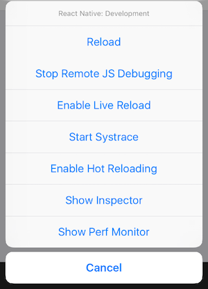
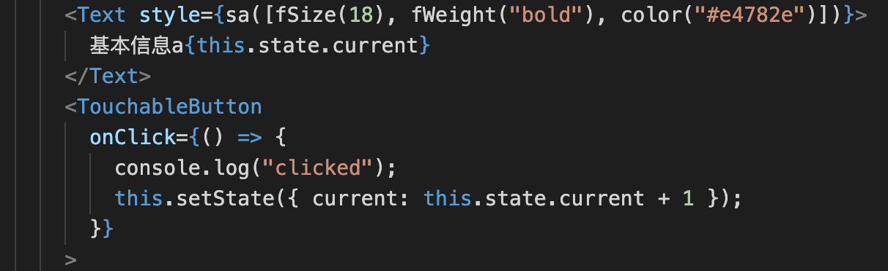
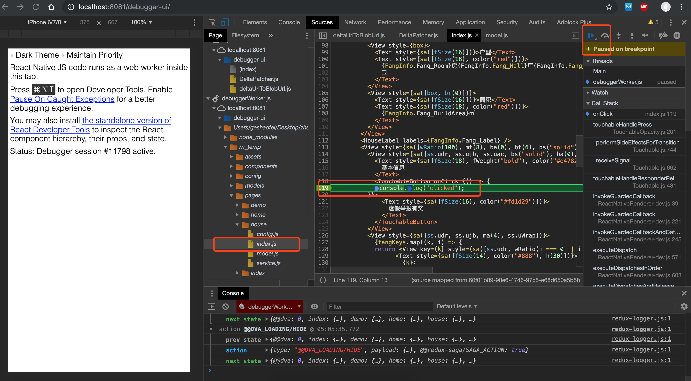
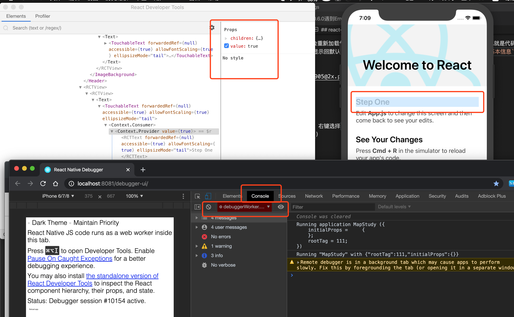

步骤
配置 VSCode
- 打开 Vscode-找到设置-搜索
setting.json并编辑 - 添加以下代码,保存即可.
1 | "terminal.external.osxExec": "iTerm.app", |
上面的字体是解决乱码的问题。
- 或者单个搜索并单独配置也可以。注意字体先下载字体文件，然后在
字体册安装。
1 | open -a Simulator |
苹果切换模拟器
通过模拟器的 hardware 菜单可以实现。
1 | # 查看模拟器列表 |
注意通过命令启动的模拟器必须要不包含google api的 Image 才可。
1 | # 查看模拟器列表 |
请注意，在安装NVM for Windows之前，您需要卸载任何现有版本的node.js. 还删除可能保留的任何现有nodejs安装目录（例如，C：\ Program Files \ nodejs）。NVM生成的符号链接不会覆盖现有（甚至是空的）安装目录。
您还应该删除现有的npm安装位置（例如C：\ Users <user> \ AppData \ Roaming \ npm），以便正确使用nvm安装位置。
在releases中下载最新版本nvm-setup.zip，解压后，是一个安装文件，直接安装即可。
由于国内在一些情况下有些特殊。Node.js 官方镜像源又在国外，经常通过 nvm 安装 Node.js 时，速度比较慢，或者没有响应。
根据这种情况，nvm 允许更改安装的镜像源，我们可以将镜像源切换到国内的淘宝提供的镜像源。
1 | set NVM_NODEJS_ORG_MIRROR=http://npm.taobao.org/mirrors/node |
1 | // nvm install <version> [arch] |
1 | nvm use 12.3.1 [32|64] |
1 | nvm uninstall 12.3.1 |
1 | //查看安装的node版本列表 |
要升级nvm-windows，请运行新安装程序。它将安全地覆盖需要更新的文件，而无需触及node.js安装。确保使用相同的安装和符号链接文件夹。如果您最初安装到默认位置，则只需在每个窗口上单击“下一步”，直到完成为止。
请注意，您安装的任何全局
npm模块都不会在已安装的各种版本的node.js之间共享。此外，您正在使用的node版本可能不支持某些npm模块，因此请在工作时注意您的环境。
如果 windows 系统中 nodejs 的版本高于12.10.0将会报如下错误：
1 | Invalid regular expression: /(.*\\__fixtures__\\.*|node_modules[\\\]react[\\\]dist[\\\].*|website\\node_modules\\.*|heapCapture\\bundle\.js|.*\\__tests__\\.*)$/: Unterminated character class |
回退 node 版本为 v12.10.0。
1 | nvm install 12.10.0 |
如果上述不成功，可以先卸载原来的，然后下载安装：https://npm.taobao.org/mirrors/node/v12.10.0/node-v12.10.0-x64.msi。
在 taro 项目taro-demo中，如果运行yarn dev:rn没有启动Metro Bundler Server，需要关闭当前进程，先启动react-native start启动Metro Bundler Server，然后在新开一个终端，运行yarn dev:rn。
在 SDK Manager 中选择 “SDK Platforms”选项卡，然后在右下角勾选 “Show Package Details”。展开 Android 6.0 (Marshmallow) 选项，确保勾选了下面这些组件（重申你必须使用稳定的翻墙工具，否则可能都看不到这个界面）：
Android SDK Platform 28Intel x86 Atom_64 System Image（官方模拟器镜像文件，使用非官方模拟器不需要安装此组件）然后点击”SDK Tools”选项卡，同样勾中右下角的”Show Package Details”。展开”Android SDK Build-Tools”选项，确保选中了 React Native 所必须的 23.0.1 版本。
注意采用的是的
Android 6.0，并且Android SDK的版本是23.0.1。
PostCSS 本身是一个功能比较单一的工具。它提供了一种方式用 JavaScript 代码来处理 CSS。它负责把 CSS 代码解析成抽象语法树结构（Abstract Syntax Tree，AST），再交由插件来进行处理。插件基于 CSS 代码的 AST 所能进行的操作是多种多样的，比如可以支持变量和混入（mixin），增加浏览器相关的声明前缀，或是把使用将来的 CSS 规范的样式规则转译（transpile）成当前的 CSS 规范支持的格式。从这个角度来说，PostCSS 的强大之处在于其不断发展的插件体系。目前 PostCSS 已经有 200 多个功能各异的插件。开发人员也可以根据项目的需要，开发出自己的 PostCSS 插件。
PostCSS 从其诞生之时就带来了社区对其类别划分的争议。这主要是由于其名称中的 post，很容易让人联想到 PostCSS 是用来做 CSS 后处理（post-processor）的，从而与已有的 CSS 预处理（pre-processor）语言，如 SASS 和 LESS 等进行类比。实际上，PostCSS 的主要功能只有两个：第一个就是前面提到的把 CSS 解析成 JavaScript 可以操作的 AST，第二个就是调用插件来处理 AST 并得到结果。因此，不能简单的把 PostCSS 归类成 CSS 预处理或后处理工具。PostCSS 所能执行的任务非常多，同时涵盖了传统意义上的预处理和后处理。PostCSS 是一个全新的工具，给前端开发人员带来了不一样的处理 CSS 的方式。
BEM 是基于组件的 web 开发方法。其思想是将用户界面分隔为独立的块，从而使开发复杂的 UI 界面变得更简单和快，且不需要粘贴复制便可复用现有代码。
BEM 由 Block、Element、Modifier 组成。
选择器里用以下连接符扩展他们的关系：
示例：
1 | block-name_modifier-name |
代码片段可能被复用且这段代码不依赖其他组件即可用 Block。块可以互相嵌套,可以嵌套任意多层。

1 | npm install -g yarn react-native-cli |
1 | react-native init AwesomeProject |
1 | cd AwesomeProject |
1 | react-native run-ios --simulator "iPhone Xs Max" |
1 | npm start -- --reset-cache |
10.0.2.2：8081On MAC I solved it by doing following:
Cmd + M on emulator screenlocalhost:8081react-native run-androidDebugger is connected now!
你可以通过摇晃设备或是选择 iOS 模拟器的 “Hardware” 菜单中的 “Shake Gesture” 选项来打开开发菜单。另外，如果是在 iOS 模拟器中运行，还可以按下 Command⌘ + D 快捷键，Android 模拟器对应的则是 Command⌘ + M（windows 上可能是 F1 或者 F2），或是直接在命令行中运行 adb shell input keyevent 82 来发送菜单键命令。

传统的原生应用开发中，每一次修改都需要重新编译，但在 RN 中你只需要刷新一下 JavaScript 代码，就能立刻看到变化。具体的操作就是在开发菜单中点击 “Reload” 选项。也可以在 iOS 模拟器中按下 Command⌘ + R，Android 模拟器上对应的则是 按两下R。
1 | react-native init myRn --version 0.55.4 |
启用了live reload，当源代码有修改时，模拟器将会重新加载代码，并且显示回主页，而hot reloading则为热加载，也就是代码作了修改，但是程序仍能够保持原来的状态，只加载受影响的区域，不会显示回默认主页。如下图，如果当前的state值为 8，在源代码处在基本信息后面添加a并保存，界面发生更新，但是显示的state值仍然是 8。

一般情况下，两者不会同时启用。
首先启用模拟器上的调试菜单，这时候会打开谷歌浏览器，右键选择检查进入调试视图，找到源码并设置断点即可，如下图：

1 | npm i -g react-devtools@3 |
注意是指定安装这个版本，新版本连不上，让后在模拟器上打开调试菜单，选择show inspector，点击页面上的任何元素，将会在 react-devtools 中显式该组件的相关信息，如果打开debug模式，选择console页签，选中下面的debuggerworker.xxx.js，则可以显式 state 和 props。

| Android | IOS | |
|---|---|---|
| 启动 | react-native run android |
react-native run ios |
| 菜单 | cmd+m | cmd+d |
| 重新加载 | 双击r |
cmd+r |
npm 包有很多的镜像源，有的源有的时候访问失败，有的源可能没有最新的包等等，所以有时需要切换 npm 的源，nrm 包就是解决快速切换问题的。
nrm 可以帮助您在不同的 npm 源地址之间轻松快速地切换。
nrm 内置了如下源：
经过本人实测，nj、rednpm、edunpm 源访问失败(2018-12-19)。
打开终端运行npm install -g nrm命令：
1 | ~ npm install -g nrm |
查看是否安装成功:nrm --version
1 | ~ nrm --version |
去网上一搜都是要去 xcode 打开才行，实在麻烦，其实快速打开，只需要在命令行执行以下命令就行了：
1 | open -a Simulator |